1. OZ 출력물 (개발툴, SP)
툴바 => 버튼 하나 만듬(사용자가 볼 수 있는 버튼)
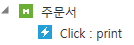
제목 = 주문서
이벤트유형 = P-Print (프린트를 안하면 프린트로 인식을 못함)
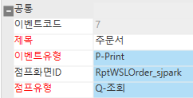
(점프와 출력물은 비슷한 느낌
결국 누르면 다른 화면으로 가기 때문에)
점프화면ID => ‘cs’에서 먼저 작성
================================================================
* cs – (점프화면ID 이름 필요 => cs에서 먼저 임시로 생성)
개발툴에서 만들고 cs에서 조회하는게 아니라
cs - ‘프로그램 등록’에서 역으로 만들어줌
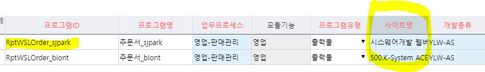
프로그램ID (=개발툴에서의 점프화면ID)
RptWSLOrder_sjpark
프로그램유형
출력물 (폼빌더로 하면 폼이 생기기 때문)
사이트명 (업체별로 각각 채번되는게 다르기 때문에 사이트명은 중요)
결국 있는거 복사하고 사이트명과 프로그램이름 바꾸기
저장 => 이름에 자동으로 사이트이름 생성 => 삭제
저장하면 출력물 이름이 생김
erp에서 출력물에 대한걸 연결 시켜주기 위해 먼저 cs에 작성
점프화면ID => 아까 작성한 RptWSLOrder_sjpark
점프유형 => Q-조회
출력물도 결국 SP상에서 데이터를 뽑아서 보여주는 것이기 때문에 => 조회
===============================================
메소드 추가
메소드 ID
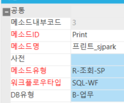
맨 왼쪽 메소드 클릭 - 속성
name => print
타입 = Q-조회
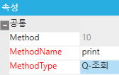
- SP 속성
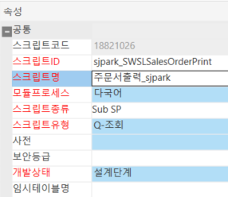
*이벤트WF
G – seq 가져감
M
E = 리포트출력
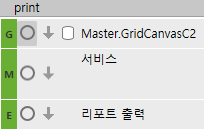
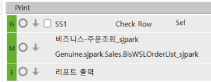
출력물이 여러개 => 프린트 비즈니스 하나 새로 생성
한 개면 그냥 원래있던 비즈니스에 추가
서비스구성은 결국 사용자가 요청한대로 보내주면 됨
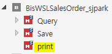
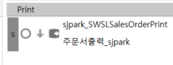
=====================
=====================
조회할 때는 수정 해야 되는 경우도 있기 때문에 seq, name 같이 뿌려줘야함
출력물은 수정할 일이 없기 때문에 name만 뿌리면 된다
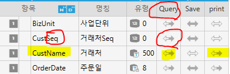
===========================
* 출력물
출력물은 데이터블록 한개만 써라 (이름은 상관x)
- 두 개일 경우
=> 특별한 경우
input 1로가져가고 output 2로 뿌리면 된다
출력 은 결국 조회
조회할 때 키 값을 주로 가져가지만 그게 정답은 아니다
조회조건만 출력해달라고 하는 경우도 있기 때문
새 sp생성 (sjpark_SWSLSalesOrderPrint)
SP를 먼저 작성하고 출력물 작성
sjpark_TSLSalesOrder, Item 합치기
=> 그냥 print의 서비스 구성보고 SELECT에 항목 붙여넣기 해도 된다
(붙여 넣으면서, 옆에 —명칭 추가하는 것도 좋다)
===================